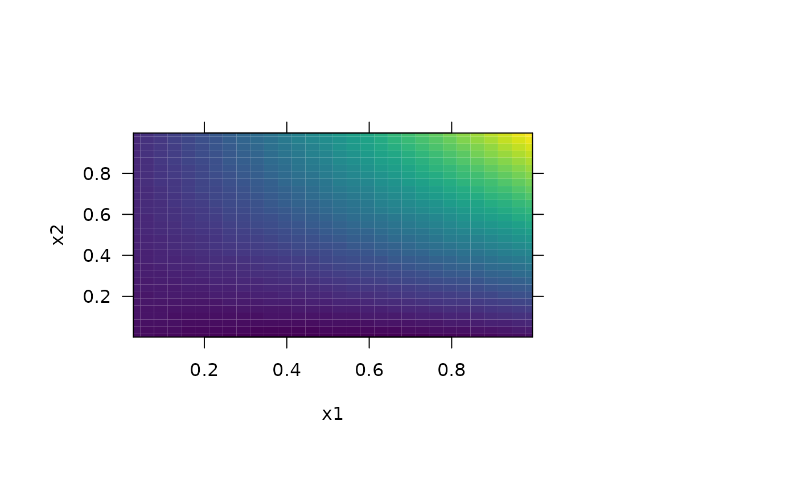
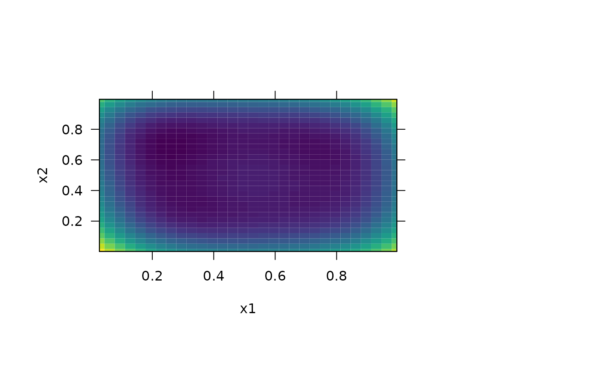
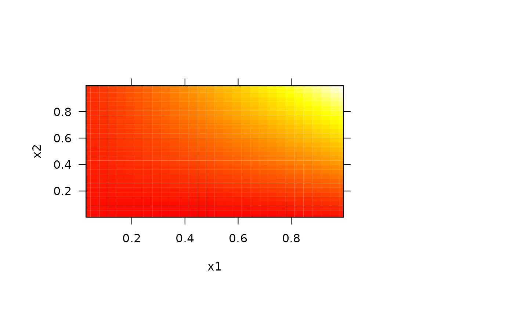
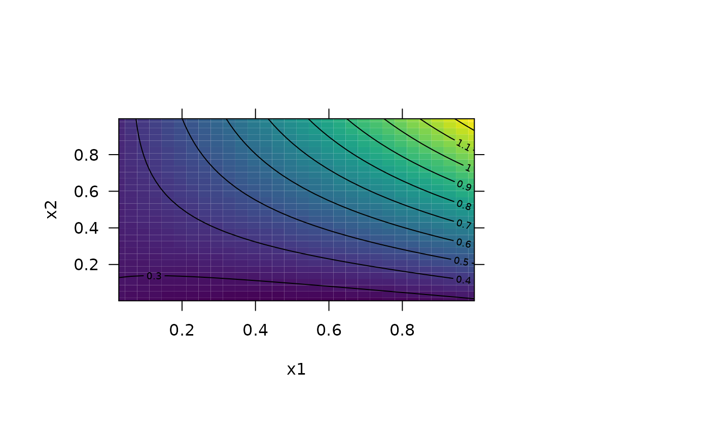
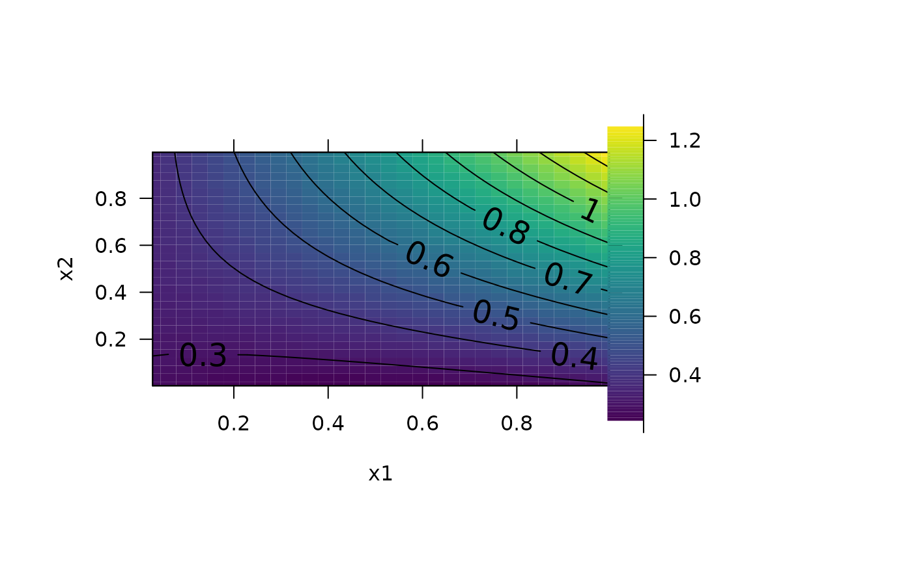
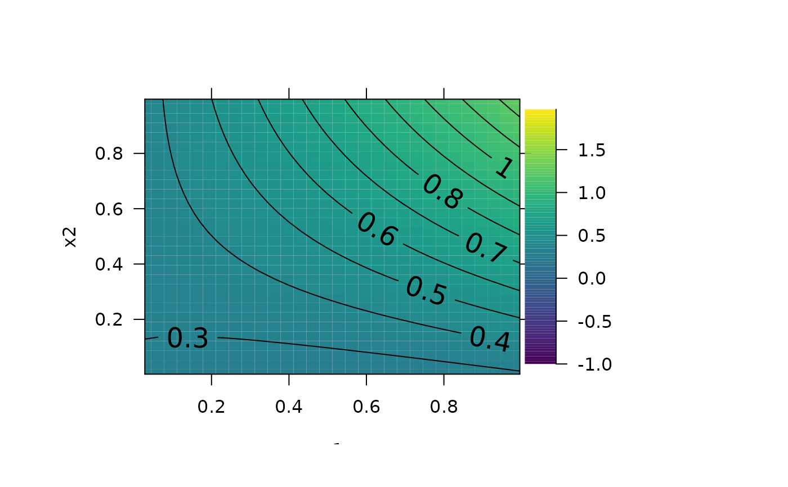
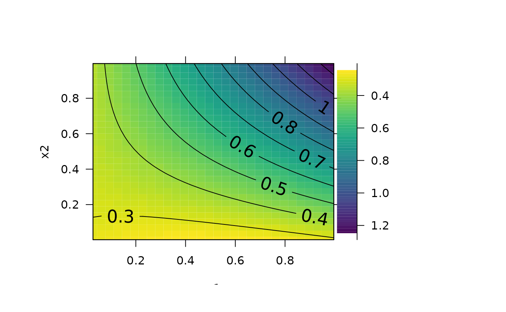

This is function plots pretty two-dimensional predictions from a statistical model.
pretty_predictions_2d(
x,
view = NULL,
n_grid = 30,
cond = list(),
predict_param = list(),
select = "fit",
xlim = NULL,
ylim = NULL,
zlim = NULL,
xlab = NULL,
ylab = NULL,
pretty_axis_args = list(side = 1:4, axis = list(list(), list(), list(labels = FALSE),
list(labels = FALSE))),
col_pal = viridis::viridis,
col_n = 100,
add_xy = NULL,
add_rug_x = NULL,
add_rug_y = NULL,
add_contour = NULL,
add_legend = NULL,
legend_breaks = NULL,
legend_labels = NULL,
legend_x = NULL,
legend_y = NULL,
...
)A model (e.g. an output from gam).
A character vector of two variables that define the variables on the x and y axis.
Prediction controls.
n_grid is an integer that defines the resolution of the surface (in both x and y directions).
cond (optional) is a named list that defines the values of other predictors (i.e., those not in view) for which to make predictions. If un-supplied, factor variables are set at the most commonly occuring factor level and continuous variables are set at the closest observed value to the median.
predict_param (optional) A named list of arguments, passed to predict, to customise predictions.
select (optional) If the call to predict returns a list, select is the name of the element in that list that is plotted (e.g., "fit" or "se.fit"). If the call to predict returns a numeric vector, this is ignored.
Axis limits.
X and y axis labels.
A named list of arguments, passed to pretty_axis, to control axes.
Colour controls.
col_pal is a colour palette function from which colours are drawn.
col_n is the number of colours to use in the colour scheme.
A named list of arguments, passed to points, to add observations to the plot. add_xy = NULL suppresses this option, add_xy = list() implements default arguments and a named list customises these.
Named list of arguments, passed to rug, to add observed values of the variables defined in view to the plot. add_rug_* = NULL suppresses this option, add_rug_* implements default arguments and a named list customises these.
A named list of arguments, passed to contour, to add contour lines to the plot. add_contour = NULL suppresses this option, add_contour = list() implements default arguments and a named list customises these.
Legend controls.
add_legend A named list of arguments, passed to add_colour_bar, to add a legend to the plot. add_legend = NULL suppresses this option, add_legend = list() implements default arguments and a named list customises these.
legend_breaks and legend_labels are functions that modify the legend breaks and legend labels respectively.
legend_x and legend_y are numeric vectors of length two that specify the x and y positions, on the current plot, for the four corners of the legend. If un-supplied, the two legend_x coordinates are taken as the maximum x limit of x plus (a) 1 per cent and (b) 10 per cent of the difference between the maximum and minimum x limits. legend_y is taken from ylim.
Additional arguments passed to image, which is used for plotting (excluding col, breaks and axes which are defined internally).
The function returns a contour plot of the predictions of a model for the two variables defined in view and, invisibly, a named list containing the prediction matrix (`z') and the list of pretty axis parameters produced by pretty_axis (`axis_ls').
This function was motivated by vis.gam (see also pretty_smooth_2d).
#### Simulate example data and fit model (following ?mgcv::vis.gam examples)
set.seed(0)
n <- 200
sig2 <- 4
x0 <- runif(n, 0, 1)
x1 <- runif(n, 0, 1)
x2 <- runif(n, 0, 1)
y <- x0^2 + x1 * x2 + runif(n, -0.3, 0.3)
g <- mgcv::gam(y ~ s(x0, x1, x2))
#### Example (1): Contour plot using default options
pp <- par(oma = c(2, 2, 2, 10))
pretty_predictions_2d(g, view = c("x1", "x2"))
#### Example (2): Customise predictions
# Use n_grid to control the grid resolution
pretty_predictions_2d(g, view = c("x1", "x2"), n_grid = 10)
# Use cond to set other variables at specific values
pretty_predictions_2d(g, view = c("x1", "x2"), cond = list(x0 = mean(x0)))

# Use predict_param for further control, e.g., to plot SEs
pretty_predictions_2d(g, view = c("x1", "x2"),
predict_param = list(se.fit = TRUE), select = "se.fit")

#### Example (3): Customise colours
# Use col_pal and col_n
pretty_predictions_2d(g, view = c("x1", "x2"),
col_pal = grDevices::heat.colors,
col_n = 10)
pretty_predictions_2d(g, view = c("x1", "x2"),
col_pal = grDevices::heat.colors,
col_n = 100)

#### Example (4): Customise axes via xlim, ylim and pretty_axis_args
# Use xlim and ylim
pretty_predictions_2d(g, view = c("x1", "x2"),
xlim = c(0, 1),
ylim = c(0, 1))
# Use pretty_axis_args
pretty_predictions_2d(g, view = c("x1", "x2"),
pretty_axis_args = list(side = 1:4))
#### Example (5): Add observed data
# Specify list() to use default options
pretty_predictions_2d(g, view = c("x1", "x2"),
add_xy = list())
# Customise addition of observed data
pretty_predictions_2d(g, view = c("x1", "x2"),
add_xy = list(pch = ".'", cex = 5))
#### Example (6): Add rugs for the x and y variables
# Use default options
pretty_predictions_2d(g, view = c("x1", "x2"),
add_rug_x = list(),
add_rug_y = list())
# Customise options
pretty_predictions_2d(g, view = c("x1", "x2"),
add_rug_x = list(col = "grey"),
add_rug_y = list(col = "grey"))
#### Example (7): Add contours
# Use default options
pretty_predictions_2d(g, view = c("x1", "x2"),
add_contour = list())

# Customise contours
pretty_predictions_2d(g, view = c("x1", "x2"),
add_contour = list(labcex = 1.5))
#### Example (8): Add add_colour_bar()
# Use default options
pp <- graphics::par(oma = c(2, 2, 2, 10))
pretty_predictions_2d(g,
view = c("x1", "x2"),
add_contour = list(labcex = 1.5),
add_legend = list())

graphics::par(pp)
# Customise colour bar
pp <- graphics::par(oma = c(2, 2, 2, 10))
pretty_predictions_2d(g,
view = c("x1", "x2"),
add_contour = list(labcex = 1.5),
zlim = c(-1, 2), add_legend = list())

graphics::par(pp)
# E.g., reverse the colour scheme and legend
# ... This is useful if, for example, the surface represents the depth of an
# ... animal, in which case it is natural to have shallower depths near the
# ... top of the legend.
pp <- graphics::par(oma = c(2, 2, 2, 10))
pretty_predictions_2d(g, view = c("x1", "x2"),
col_pal = function(n) rev(viridis::viridis(n)),
add_contour = list(labcex = 1.5),
add_legend = list(),
legend_breaks = function(x) x *-1,
legend_labels = abs)

graphics::par(pp)